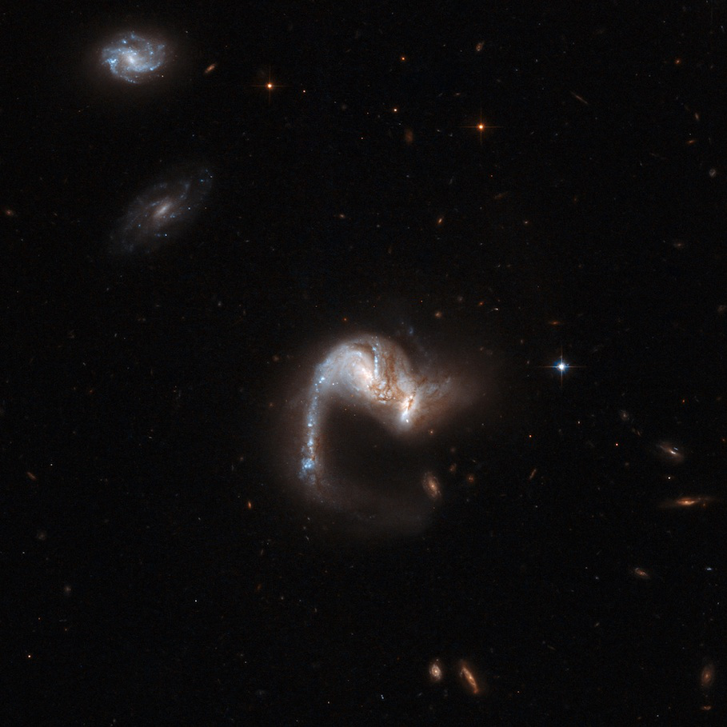
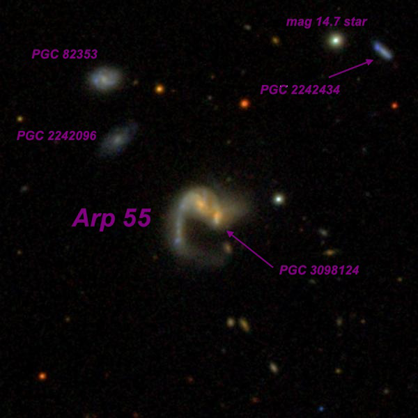
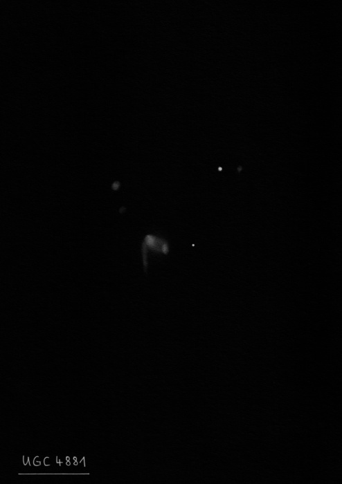
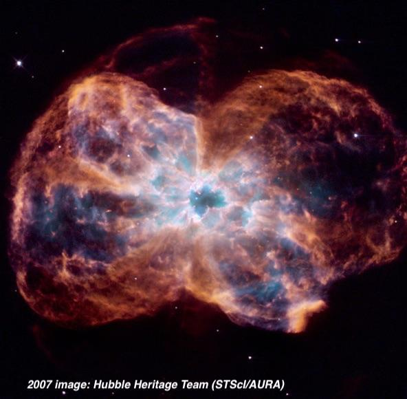

NGC 2440
- Name: NGC 2440 = PK 234+2.1 = PN G234.8+02.4 = ESO 560-9
- RA: 07 41 55.4
- Dec: -18° 12' 31" (2000)
- Constellation: Puppis
- Size: 74"x42"
- Magnitude: 9.3V
- Surf Br: 8.9 mag/arcmin²
NGC 2440 is a remarkable bi-polar planetary (quadrapolar on deep images) discovered in 1790 by William Herschel and succinctly described as a "beautiful planetary nebula of a considerable degree of brightness". William Lassell, the wealthy English amateur who discovered Triton, observed NGC 2440 in January of 1853 with his 24-inch equatorial reflector on Malta. He wrote, "no description can do justice to this singular object. With 150x it just attracts the eye in sweeping, as a bluish-white spot, a few seconds in diameter. A most extraordinary object [at 650x], not beautiful, for it has no symmetry – but wonderful." This small sketch, showing 4 or 5 knots, was published in 1854.

Photographs reveal an amazing complex structure with internal filaments, gas blobs and two pairs of bipolar lobes. Perhaps the earliest photograph was using the Crossley reflector at Lick Observatory. Heber Curtis (1918) reported NGC 2440 has "no central star; the strong central masses are nebulous in the shortest exposures. A very irregular and patchy oval; main portion 54"x20" in pa 37°, with a faint extension at east, north of the middle."

The 18th magnitude progenitor star is a scorcher with a temperature of roughly 200,000° C (over 30 times the sun's temperature) and it ranks as one of the hottest known PN central stars. The planetary is relatively young, and has an unusually rich, high‐excitation spectrum. Its distance is approximately 4200 ± 200 light years.
NGC 2440 contains two bright condensations 7" apart in PA 153° within a chaotic envelope about 30" in diameter that looks explosive on images.

NGC 2440 can be found by dropping down 3.4° south from M46. A 6-inch scope at 75x easily reveals a small, hazy oval, 20" to 25" in diameter with a relatively high surface brightness. In my 18-inch the bright, boxy inner region contains two condensations or knots. A fainter outer halo is oriented southwest to northeast with two outer wings similar to the spiral arms of a galaxy. The nebulosity is weaker to the southwest of the main body with a cup-shaped dark "notch" protruding into the central region.
I've viewed this remarkable planetary through Jimi's 48-inch at 488x and 814x. The very high surface brightness central region was irregularly shaped with a very ragged periphery, giving the impression that the central region was erupting or bursting. Within the east side of the central portion were two intense condensations or knots, oriented ~N-S, with the southern knot brighter. A third, smaller elongated knot is just west and sits close to the center. The main body is elongated nearly 2:1 SW-NE, roughly 1.1'x0.6', but with an irregular outline. The southwest end of the planetary dims and protrudes out, creating a cup-shaped hollow with a very small brighter knot at its southwest tip. A prominent partial loop or outer wing is attached on the northwest edge of the central section, like a spiral arm, and swings clockwise to the west and slightly south. The eastern portion of the planetary consists of a large complete, irregular loop (darker in the interior), giving the strong appearance of being blown out from the central region.
As always,
"Give it a go and let us know!
Good luck and great viewing!"
